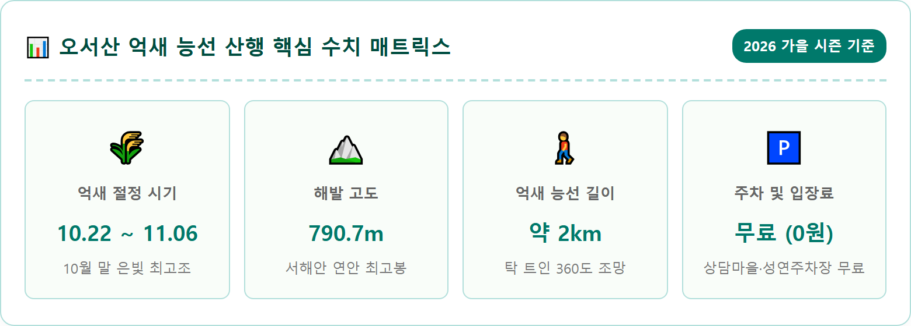
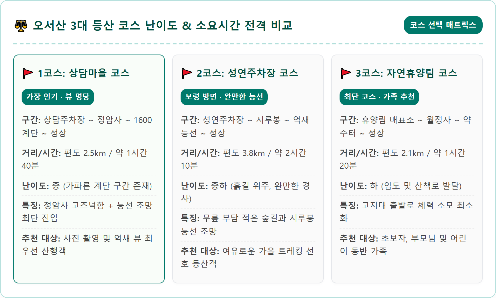
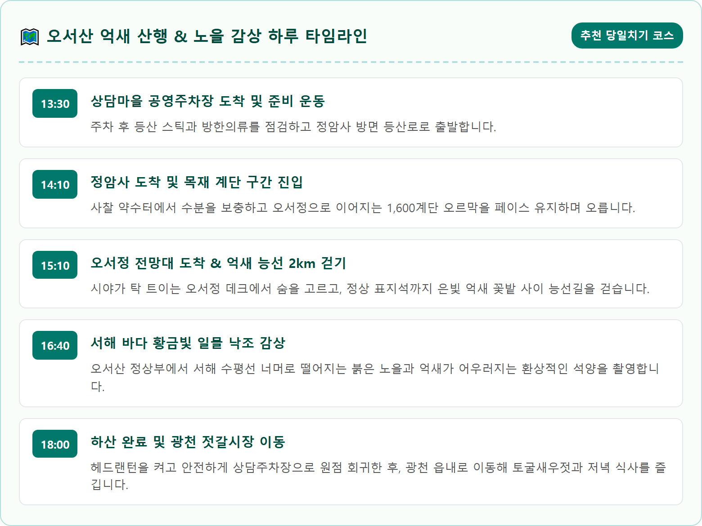
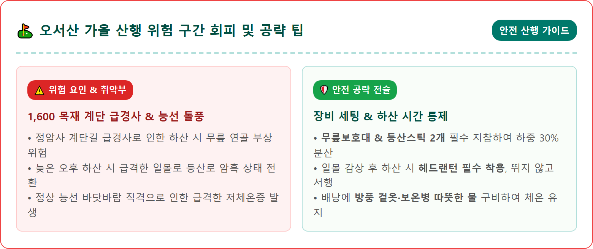
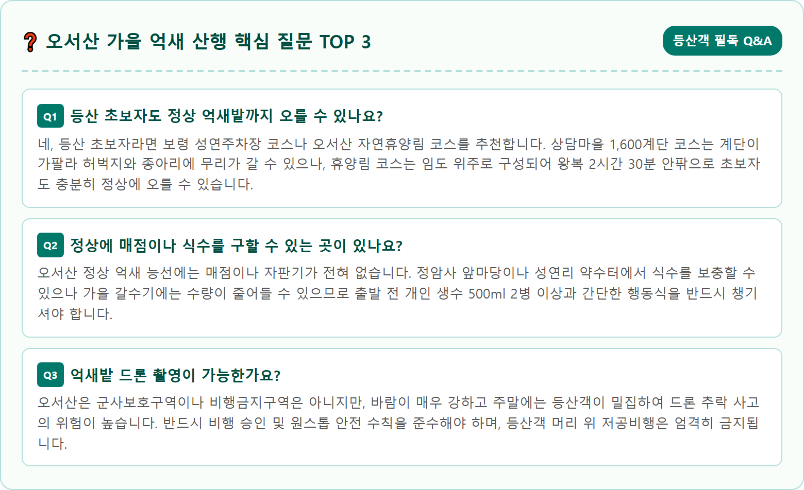

Panoramic wide-angle view of Oseosan Mountain ridge in autumn, South Korea. Golden and shimmering silver grass fields undulating along the rocky mountain crest at 790 meters above sea level under a dramatic golden hour sunset. Far in the distance, the sparkling blue Yellow Sea, coastal islands, and bays are visible under warm amber clouds. A narrow mountain hiking trail meanders through the dense sea of silver miscanthus reeds, photorealistic, ultra-high resolution, 8k, majestic autumn landscape, warm atmospheric lighting, deep depth of field, 1:1 aspect ratio.




